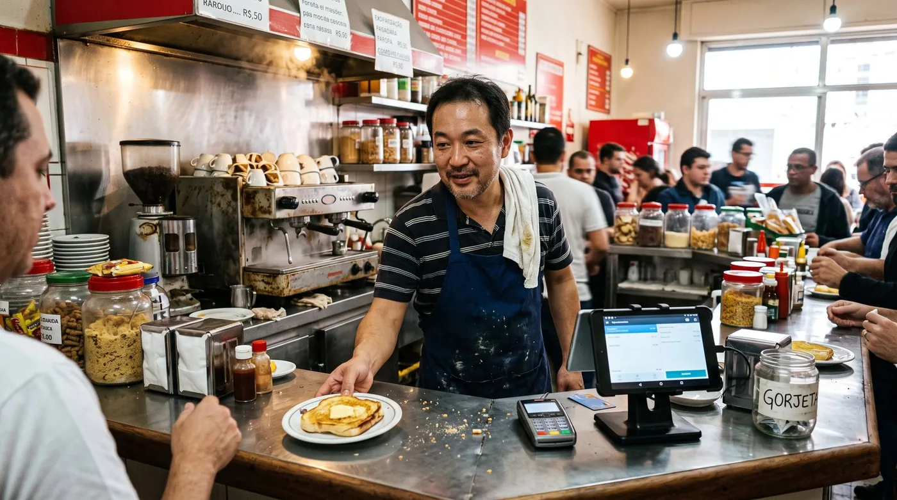

SumUp, Moloni ou Vendus: qual PDV escolher para o seu restaurante ou café em Portugal?
Se está a abrir um café, um restaurante pequeno ou uma pastelaria em Portugal, já deve ter percebido que existem à venda três tipos de coisa diferente com o nome "sistema de caixa": um terminal de pagamento, um programa de faturação certificado e um verdadeiro PDV de restauração com mapa de mesas. Raramente são a mesma ferramenta, e é aí que muita gente se engana e paga a mais, ou fica presa a um sistema que não serve para o dia a dia da sala. Este guia compara três nomes que qualquer comerciante português reconhece, SumUp, Moloni e Vendus, e mostra onde entra uma alternativa mais recente, o digabloPos.

TPA, faturação e PDV: três coisas diferentes
Antes de comparar marcas, vale separar os três problemas que um restaurante precisa de resolver, porque nem sempre é o mesmo fornecedor a tratar de tudo:
Leituras relacionadas: quanto o seu PDV custa por ano, Stone, PagBank ou Mercado Pago e controlar o fiado.
- Processar o pagamento com cartão, o TPA (terminal de pagamento automático) que o cliente usa para pagar por contacto, chip ou telemóvel.
- Emitir a fatura ou fatura-simplificada, que em Portugal, na maioria dos casos, tem de sair de um software certificado pela AT, com ATCUD, código QR e comunicação de séries.
- Gerir a sala e a cozinha: mapa de mesas, pedidos, divisão de conta, controlo de stock de bebidas e comida.
Algumas empresas fazem as três coisas bem, outras fazem uma muito bem e as restantes de forma básica. É exatamente aí que SumUp, Moloni e Vendus se distinguem, e é por isso que vale a pena entender de onde vem cada uma antes de escolher.
SumUp: forte no pagamento, limitada como caixa completa
A SumUp é, para a maioria dos comerciantes portugueses, sinónimo de "aquele leitor de cartão pequeno". E com razão, é provavelmente a marca de TPA mais conhecida entre pequenos negócios em Portugal, com terminais como o Solo Lite (o mais barato, que precisa de estar emparelhado por Bluetooth com um telemóvel ou tablet) e o Solo, que funciona de forma autónoma. Segundo informação pública, em Portugal a SumUp cobra por transação (sem mensalidade fixa no plano base), com uma taxa citada por volta de 1,5% no Solo, mas confirme sempre o valor atual no site da SumUp, porque as taxas variam por plano e podem mudar.
Onde a SumUp cresceu bastante nos últimos anos foi na aplicação de ponto de venda, vendida à parte do simples leitor de cartão, pensada para transformar um tablet num sistema de caixa mais completo, com gestão de artigos, stock básico e relatórios. Ainda assim, para um restaurante com salão, o que falta comparar com cuidado é se essa app cobre bem mapa de mesas, pedidos para a cozinha e divisão de conta, e sobretudo se o software usado para emitir a fatura está mesmo na lista de programas certificados pela AT. Não assuma, verifique diretamente com a SumUp qual módulo está certificado para faturação em Portugal antes de decidir.
Moloni: faturação certificada com POS incluído
O Moloni nasceu como programa de faturação online e é hoje um dos nomes mais usados por pequenas empresas em Portugal, citado como tendo dezenas de milhares de empresas clientes e reconhecido em premiações do setor. É certificado pela AT, e o módulo de POS existe tanto numa versão via browser (Windows, macOS ou Linux) como em aplicações móveis, incluído a partir dos planos intermédios.
O plano mais popular, o Pro, foi encontrado nas fontes públicas consultadas a um valor histórico de cerca de 15,90 euros por mês (190,80 euros no plano anual), mais IVA, mas o Moloni já atualizou preços mais do que uma vez nos últimos anos, por isso trate este número como referência e confirme o valor exato na página oficial de planos antes de assinar. Um ponto forte citado com frequência é o suporte em português por telefone, email e chat incluído sem custo extra.
Vendus: nasceu focado em restauração
O Cegid Vendus (Vendus) também é certificado pela AT e tem um módulo de restauração bastante trabalhado: gestão de salas e mesas, pedidos enviados para a cozinha, consulta de conta por mesa, e divisão de conta no fecho. Segundo o site oficial, os planos Flex e Pro custam por volta de 15 euros mais IVA por mês (ou cerca de 131,88 euros mais IVA no plano anual, o que representa um desconto face ao mensal), com descontos adicionais de 25% a partir do segundo posto de venda e 30% a partir do terceiro. É descrito pela própria empresa como uma solução que funciona inteiramente na nuvem, o que é ótimo para sincronizar várias mesas e dispositivos em tempo real, mas vale a pena confirmar diretamente com o fornecedor o que acontece exatamente se a ligação à internet cair a meio do serviço, já que nem todas as soluções cloud tratam isso da mesma forma.
Comparativo: as três opções e uma alternativa
Depois de olhar para as três, fica claro que SumUp, Moloni e Vendus resolvem bem partes diferentes do problema. Colocamos aqui também o digabloPos, uma opção mais recente que tenta juntar as três frentes (pagamento à parte, faturação pronta e sala) num único sistema gratuito na base.
digabloPos
O digabloPos é um PDV em nuvem com plano base gratuito para sempre, sem cartão de crédito, sem comissão obrigatória sobre pagamentos. Vem com modo offline com sincronização automática, mapa de mesas interativo para a sala, gestão de conta-corrente de clientes (fiado) e multimoeda, útil se o seu negócio recebe turistas. Funciona em qualquer tablet Android, sem obrigar a comprar hardware específico, e traz módulos opcionais que só ativa quando precisar. Está pronto para a faturação eletrónica.
👍 Pontos fortes
- Plano gratuito para sempre, sem obrigação de comissão
- Modo offline com sincronização automática
- Mapa de mesas incluído no plano base
- Multimoeda em módulo pago (cerca de 10 $/mês), útil em zonas turísticas
- Gestão de fiado e histórico de clientes
- Funciona em hardware genérico
👎 A confirmar
- Marca mais recente do que SumUp, Moloni ou Vendus no mercado português
- Módulos avançados são pagos à parte
- Certificação AT em Portugal a confirmar (ver aviso abaixo)
Vendus
Certificado pela AT, com o módulo de restauração mais maduro dos três em termos de mapa de salas e mesas. Bom para quem quer algo pronto a usar em pouco tempo. O ponto de atenção é confirmar diretamente com o fornecedor o comportamento em caso de falha de internet, já que é descrito como solução 100% cloud.
Moloni
Certificado pela AT, forte adoção em Portugal e suporte em português incluído. O POS vem incluído a partir dos planos intermédios, e vale confirmar se o plano de entrada cobre mesmo as suas necessidades de sala ou se vai precisar de subir de plano.
SumUp
Excelente para começar a aceitar cartão sem burocracia e sem mensalidade fixa no plano base. Mas para um restaurante com sala, vale confirmar bem se a aplicação de POS da SumUp cobre mapa de mesas e se está certificada para emitir faturas em Portugal, ou se vai continuar a precisar de outro programa só para isso.
Quer testar um PDV com mapa de mesas sem pagar nada primeiro?
O plano base do digabloPos é gratuito para sempre e fica pronto em poucos minutos. Confirme a certificação AT antes de o usar para faturação fiscal em Portugal.
Criar a minha caixa grátisTabela comparativa
| Critério | digabloPos | SumUp | Moloni | Vendus |
|---|---|---|---|---|
| Foco principal | PDV + sala | Pagamento (TPA) | Faturação + POS | POS + restauração |
| Certificado pela AT (Portugal) | A confirmar | A confirmar | Sim | Sim |
| Plano gratuito para sempre | Sim (base) | Só o TPA por transação | Teste gratuito | Teste gratuito |
| Mapa de mesas incluído | Sim | A confirmar | Sim | Sim |
| Modo offline | Sim | Depende do modelo | A confirmar | A confirmar |
| Multimoeda | Sim, módulo pago | Não é o foco | Sim (faturação) | A confirmar |
| Comissão obrigatória sobre pagamentos | Não | Sim (por transação) | Não | Não |
Informação recolhida em julho de 2026 a partir de sites oficiais e fontes especializadas. Preços, planos e o estado de certificação mudam com frequência, confirme sempre nos sites oficiais e na lista de programas certificados da AT antes de decidir. A coluna do digabloPos indica "a confirmar" na certificação porque não a validámos de forma independente para Portugal.
O que um restaurante precisa mesmo
Fora da parte legal, há funcionalidades que fazem a diferença todos os dias ao balcão e na sala:
- Mapa de mesas com abertura, transferência e junção de contas.
- Envio de pedidos para a cozinha ou bar, seja por impressão ou por ecrã.
- Divisão de conta e pagamentos mistos (cartão, dinheiro, vale).
- Modo offline com sincronização, para não parar de vender se a Wi-Fi cair numa hora de ponta.
- Gestão de stock de bebidas e ingredientes, mesmo que básica.
- Multimoeda, relevante em zonas turísticas com clientes estrangeiros.
Nem todas as soluções cobrem tudo isto no plano de entrada. Antes de assinar, peça uma demonstração com o seu fluxo real: uma mesa com três clientes, um pedido dividido em duas contas, e um teste rápido do que acontece se desligar a internet a meio do serviço.
A pergunta que realmente importa não é "qual marca é mais conhecida", é "o que acontece na minha sala às sextas à noite se a internet cair por cinco minutos".
Custos reais a 12 meses
O preço anunciado na primeira página raramente é o custo final. Antes de decidir, some:
- Mensalidade do software e o número de postos de venda que precisa (o preço costuma ser por posto).
- IVA, que normalmente acresce aos valores anunciados.
- Módulos extra, como multiloja, relatórios avançados ou mapa de mesas em planos mais completos.
- Comissões de pagamento se usar um terminal cobrado por transação, o custo sobe com o volume de vendas.
- Hardware: confirme se funciona no tablet ou computador que já tem, ou se obriga a comprar equipamento específico do fornecedor.
Nas fontes oficiais consultadas, os planos de POS certificado em Portugal costumam rondar entre cerca de 15 e 16 euros mais IVA por mês por posto, com descontos para mais do que um posto de venda. Um plano gratuito, como o do digabloPos, pode compensar bastante nesta conta, desde que a certificação AT esteja confirmada para o seu caso antes de o usar para faturar.
Perguntas frequentes
É obrigatório ter um POS certificado pela AT para gerir um restaurante em Portugal?
Na maioria dos casos, sim: volume de negócios acima de 50.000 euros no ano anterior, contabilidade organizada, ou já usar um programa informático de faturação. Confirme a sua situação com o contabilista ou com a AT.
A SumUp serve sozinha para gerir um restaurante?
O terminal resolve bem o pagamento, mas por si só não é um sistema de faturação certificado nem gere mapa de mesas nos modelos de entrada. Confirme com a SumUp qual módulo está certificado para faturação em Portugal.
Qual a diferença principal entre Moloni e Vendus?
Ambos são certificados pela AT e têm módulo de restauração. O Moloni nasceu mais focado em faturação, o Vendus nasceu mais focado em POS e restauração e funciona 100% na nuvem. Vale a pena testar as duas em período experimental.
O digabloPos está certificado pela AT em Portugal?
Não confirmámos de forma independente um número de certificação AT. Antes de o usar para emitir faturas em Portugal, peça ao fornecedor o número de certificação e valide-o na lista oficial do Portal das Finanças.
Quanto custa mesmo um sistema de caixa para restauração em Portugal?
Some a mensalidade, o IVA, os módulos extra e as comissões de pagamento. Os planos certificados consultados rondam os 15 a 16 euros mais IVA por mês por posto. Confirme sempre o valor atual no site de cada fornecedor.
Pronto para organizar a sua sala e o seu caixa?
Configure a sua caixa gratuita em poucos minutos, sem compromisso. Confirme a certificação AT antes de a usar para faturação fiscal em Portugal.
Começar grátisFontes oficiais
As regras mudam, e mudam depressa. Aqui pode confirmar você mesmo o que está acima.
- Autoridade Tributária e Aduaneira : as obrigações de fatura e de comunicação à AT.